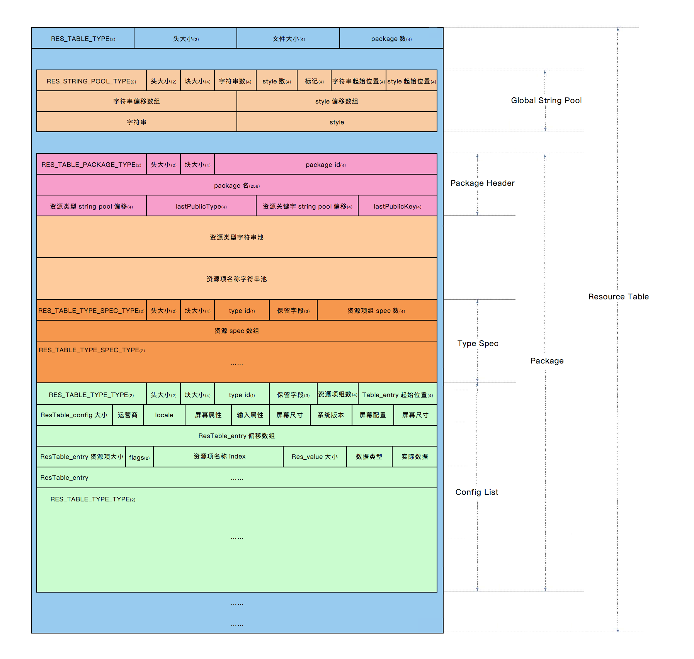

Android arsc 文件解析
apk 文件结构
在使用 Android SDK 编译 Android 工程时，它会将工程的源代码和资源打包为一个 apk 文件，apk 文件实质为一个压缩包，一个未签名的 apk 文件典型结构如下：
1 | apk file: |
在 Android 项目的编译过程中，Java 代码将会被编译为 classes.dex 文件，JNI 代码被编译为 .so 文件存放在 lib 目录下，assets 目录和 res/raw 目录中文件的将不会发生变化，对于资源文件中 xml 形式的资源将会被编译为优化过的特定的二进制 xml 格式，而类似于图片这种本身为二进制的类型也不会发生变化，AndroidManifest.xml 清单文件被编译为优化过的二进制格式。
资源编译过程
在开发 Android 项目时，需要在布局中引用资源，当资源在工程中被创建时，IDE 将会使用 Android SDK 中的 aapt 工具自动生成 R.java 文件，这时在代码或布局文件中即可使用资源 id 来引用资源。
在 aapt 工具生成 R 文件的同时，还同时生成了一个 resources.arsc 文件，它负责记录资源信息，类似于一张表，当 apk 运行在 Android 设备时，应用将会首先将 resources.arsc 包含的资源信息映射到内存中的数据结构中，当需要使用资源 id 引用具体资源时，只需要在内存中的数据结构中进行查询，即可得到具体的资源文件路径。
一个典型的资源 id 如下：
1 | 0x7f020000 |
它由 3 部分组成：
- 首字节为 Package ID，代表资源所在的资源包 ID，一般 apk 中只包含两种资源包，系统资源包和应用资源包，它们的包 ID 分别为 0x01 和 0x7f。
- 次字节为 Type ID，代表资源类型，即 animator、anim、color、drawable、layout、menu、raw、string 和 xml 等类型，每种类型对应一个 id。
- 末两个字节为 Entry ID，代表资源在其类型中的次序。
aapt 工具编译资源的过程是比较复杂的，其中的步骤非常细致，在它编译时会将资源逐步保存至一个 ResourceTable 类中，它的源码路径是 frameworks\base\tools\aapt\ResourceTable，下面简述资源编译过程（参考了罗升阳的博客）。
1. Parse AndroidManifst.xml
解析 Android 清单文件中的 package 属性，为了提供生成 R 文件的包名。
2. Add Included Resources
添加被引用的资源包，此时会引用系统资源包，在 android 源码工程的 out/target/common/obj/APPS/framework-res_intermediates/package-export.apk，可通过资源 id 引用其中的资源。
3. Collection Resource Files
aapt 工具开始收集需要编译的资源，将每种类型的资源以及对应的配置维度保存起来。
1 | Type Name Config Data |
4. Add Resources to Resource Table
将资源加入资源表。
1 | Package Type Name Config Path |
5. Compile Values Resources
收集 value 下的资源。
1 | Package Name Config Value |
6. Assign Resource ID to Bag
给特殊的 Bag 资源类型分配 id，例如 style，array 等资源。
1 | Type Name Configt Value |
7. Compile Xml Resources
这一步是将 xml 类型的资源编译为优化过后的二进制格式，便于压缩大小和解析时提高性能。有 6 个子步骤。
Parser Xml File（解析原始 xml 文件中的节点树）
1
2
3
4
5XMLNode
-elementName -Xml 元素标签
-chars -Xml 元素的文本内容
-attributes -Xml 元素的属性列表
-children -Xml 的子元素Assign Resource IDs（赋予属性名资源 id）
1
2
3
4android:layout_width -> find ResID From ResourceTable -> set ResID
android:layout_height -> find ResID From ResourceTable -> set ResID
android:gravity -> find ResID From ResourceTable -> set ResID
...Parse Values（解析属性的原始值）
1
2android:orientation = horizontal -> 0
...对于
@+符号表示无此 id，则新建此 id。1
2
3
4name Config Value
et_name default -
et_pwd default -
...Flatten（平铺，即转化为最终的二进制格式）
Collect Resource ID Strings（收集有资源 id 的属性的名称字符串）
1
2String orientation layout_width layout_height id ...
Resource ID 0x010100c4 0x010100f4 0x010100f5 0x010100d0 ...Collect Strings（收集其他字符串）
1
String android http://schemas.android.com/apk/res/android LinearLayout ...
Write Xml header（写入 xml 头部）
Write String Pool（依 id 次序写入字符串池）
1
orientation layout_width layout_height id android http://schemas.android.com/apk/res/android LinearLayout Button
Write Resource IDs（写入资源 id 值二进制的 xml 文件中）
Flatten Nodes（平铺，即将二进制的 xml 文件中的资源全部替换为资源索引）
8. Add Resource Symbols
添加资源符号，根据资源在其资源类型中的位置，为每个资源分配资源 id。
9. Write resource.arsc
将上述收集的资源写入 resoruce.arsc 文件中。分为 7 个步骤。
Collect Type Strings（收集每个 package 的类型字符串）
1
drawable layout string id ...
Collect Key Strings（收集每个 package 的资源项的名称字符串）
1
main icon app_name et_name ...
Collect Value Strings（收集资源原始值字符串）
1
res/drawable-ldpi/icon.png TestApp SubTitleText
Generate Package Trunk（生成 package 数据块）
- Write Package Header（写入 package 资源的原信息数据块）
- Write Type Strings（写入类型字符串资源池）
- Write Key Strings（写入资源项名称字符串资源池）
- Write Type Specification（写入类型规范数据块）
- Write Type Info（写入类型资源项数据块）
Write Resource Table Header（写入资源表的头部数据块）
Write Value Strings（ 写入上面收集的资源项的值字符串）
Write Package Trunk（写入上面收集的 Package 数据块）
10. Compile AndroidManifest.xml
将 AndroidManifest.xml 编译为二进制。
11. Write R.java
生成 R 文件。
12. Write APK
写入 apk 文件。
arsc 文件结构
arsc 文件作为资源信息的存储结构，其结构将会遵循上述编译过程的写入顺序。整体结构如下图所示：

（图片来自互联网）
arsc 文件的由若干 chunk 结构组成，所有 chunk 在 android 源码中的 ResourceTypes.h 头文件中均有定义，路径为 frameworks\base\include\utils\ResourceTypes.h。
对于不同 android 版本的 ResourceTypes.h 头文件，为了保证向下兼容性，所以其定义的 chunk 结构相同，不过高版本相对于低版本可能增加了一些配置的常量，例如适配高分辨率设备的 xxhdpi，xxxhdpi 维度选项。
每个 chunk 都会包含一个基础描述类型的对象，它的原始定义如下：
1 | struct ResChunk_header |
其中类型 type 的值定义如下：
1 | enum { |
它表示每种 chunk 的类型，类似于标识文件类型的魔数，而 chunk 大小 size 则表示此 chunk 的容量。
下面开始对 arsc 文件的结构进行解析，这里使用 java 语言进行解析，为了方便，对于 ResourceTypes.h 中的类型，在 java 中都应该定义对应的类，例如基础描述结构体 ResChunk_header 使用 java 定义如下：
1 | /** |
arsc 文件解析
为了便于解析，这里使用了我自己写的工具类，参考这里的简介： ObjectIO。
解析方法
针对上述 arsc 文件结构，采用如下方式进行解析：
- 定义指针变量标识当前解析的字节位置，每解析完一个 chunk 则向下移动指针 chunk 的大小。
- 采用循环解析的方式，通过 chunk 的
type判断将要解析哪种 chunk，解析对应的结构。
这里定义了 ArscParser 解析器，mIndex 为指针变量，parse(ObjectIO objectIO) 为解析子方法。
1 | public class ArscParser { |
parse RES_TABLE_TYPE
参考上面的 arsc 结构所示，首先解析的是资源表头部，它描述了整个 arsc 文件的大小，以及包含的资源包数量。
它的 type 值为 RES_TABLE_TYPE，对应的数据结构为 struct ResTable_header，java 对应的表示为：
1 | /** |
那么解析代码即：
1 | // ArscParser.java |
1 | // ArscParser.java |
测试广点通的 arsc 文件（resources_gdt1.arsc）打印结果如下：
1 | resource table header: |
parse RES_STRING_POOL_TYPE
接下来是全局字符串池的解析，它包括如下几个部分：
- ResStringPool_header 字符串池头部，包含字符串池的信息，大小，数量，数组偏移等。
- String Offset Array 字符串在字符串内容中的字节位置数组，32 位 int 类型。
- Style Offset Array 字符串样式在字符串样式中的字节位置数组，32 位 int 类型。
- String Content 字符串内容块。
- Style Content 字符串样式块。
字符串池的头部使用 struct ResStringPool_header 数据结构描述，java 表示为：
1 | /** |
其中 flags 包含 UTF8_FLAG 表示字符串格式为 utf8， SORTED_FLAG 表示已排序。
字符串的偏移数组使用 struct ResStringPool_ref 数据结构描述，java 表示为：
1 | /** |
字符串样式则使用 struct ResStringPool_span 数据结构描述，java 表示为：
1 | /** |
其中 name 表示字符串样式本身字符串的索引，比如 <b> 样式本身的字符串为 b，即为 b 在字符串池中的索引。
firstChar 和 lastChar 则为具有样式的字符串的中字符串首位的索引，例如 he<b>ll</b>o，则为 2 和 3。
字符串样式块和字符串内容块是一一对应的，就是说第一个字符串的样式对应第一个字符串样式块中的样式，如果对应的字符串中有不具有样式的字符串，则对应的 ResStringPool_span 的 name 为 0xFFFFFFFF，起占位的作用。
解析过程如下：
- 首先解析
ResStringPool_header，其中包含字符串和样式池的信息。 - 通过
header中stringCount（字符串数量） 和styleContent（样式数量）解析出字符串和样式偏移数组。 - 通过
header中的stringStart找到字符串块的起始字节位置，结合字符串偏移数组解析字符串内容。 - 通过
header中的styleStart找到样式块的起始字节位置，结合样式偏移数组解析样式内容。
需要注意的是每个字符串的前两个字节表示这个字符串的长度，末尾则为结束符 0。
下面是解析代码：
1 | // ArscParser.java |
1 | // ArscParser.java |
1 | // StringPoolChunkParser.java |
示例文件 resources_gdt1.arsc 的解析示例如下：
1 | string pool header: |
这个文件没有样式，换一个示例文件 resources_cm.arsc 文件的 style 内容示例如下：
1 | style pool: |
parse RES_TABLE_PACKAGE_TYPE
下面是资源项元信息的解析，它包含如下几个部分：
- ResTable_package 资源项元信息头部，包括 Package ID，包名和资源项索引信息。
- Type String Pool 资源类型字符串池，例如 drawable, color, xml, animator。
- Key String Pool 资源名字符串池。
- Type Specification Trunk 类型规范数据块，描述资源的配置信息。
- Type Info Trunk 类型资源项数据块。
资源项元信息头部使用 struct ResTable_package 数据结构描述，使用 java 表示为：
1 | /** |
Type String Pool 和 Key String Pool 的结构和上面的全局字符串结构完全相同。
Type Specification Trunk 和 Type Info Trunk 的 chunk type 分别为 RES_TABLE_TYPE_SPEC_TYPE 和 RES_TABLE_TYPE_TYPE，将在下面的步骤进行解析。
那么元信息头部和两个字符串池的解析代码如下：
1 | // ArscParser.java |
1 | // ArscParser.java |
解析示例文件 resources_gdt1.arsc 的结果为：
1 | === RES_TABLE_PACKAGE_TYPE ===: |
parse RES_TABLE_TYPE_SPEC_TYPE
类型规范数据块为了描述资源项的配置差异性，通过它可以了解到每类资源的配置情况。
类型规范数据块由 ResTable_typeSpec 数据结构描述，java 表示为：
1 | /** |
其中的 id 字段表示资源的类型 id，res0 和 res1 为固定的 0，entryCount 则为资源项的个数，在 ResTable_typeSpec 之后会有一个 int 型数组，来记录在哪些配置发生变化后，需要重新加载该资源。
配置项在 ResourceTypes.h 中有定义：
1 | enum { |
下面是解析过程：
1 | // ArscParser.java |
1 | // ArscParser.java |
1 | // TableTypeChunkParser.java |
解析示例文件 resource_gdt1.arsc 的结构：
1 | table type spec type: |
parse RES_TABLE_TYPE_TYPE
最后是类型资源项数据块，它用来描述资源项的具体信息，通过它可以了解每一个资源项名称、值和配置等信息。类型资源项数据是按照类型和配置来组织的，也就是说，一个具有 N 个配置的类型一共对应有 N 个类型资源项数据块。
类型资源项数据块使用 ResTable_type 数据结构描述，java 表示为：
1 | /** |
其中 entryCount 表示资源项的数量，entriesStart 表示数据块的其实位置字节偏移。
ResTableConfig 描述了资源的配置信息，内部由多个 Union 联合体构成，由于代码过长，所以具体结构可参考项目源码。
每个资源项通过 ResTable_entry 数据结构描述，java 表示为：
1 | /** |
如果其中的 flags 的 FLAG_COMPLEX 位为 1，那么这个 struct ResTable_entry 则是一个 struct ResTable_map_entry 类型，然后下面就会跟一个 struct ResTable_map 的数组。
struct ResTable_map_entry 是 struct ResTable_entry 的子结构类型，java 表示为：
1 | public class ResTableMapEntry extends ResTableEntry { |
ResTable_map 的 java 表示为：
1 | public class ResTableMap implements Struct { |
ResValue 对应数据结构 struct Res_value，它表示资源的具体数值。
1 | public class ResValue implements Struct { |
解析过程：
1 | // ArscParser.java |
1 | // ArscParser.java |
1 | // TableTypeChunkParser.java |
示例文件 resources_gdt1.arsc 的解析结果为：
1 | table type type: |
源码
参考
Android arsc 文件解析